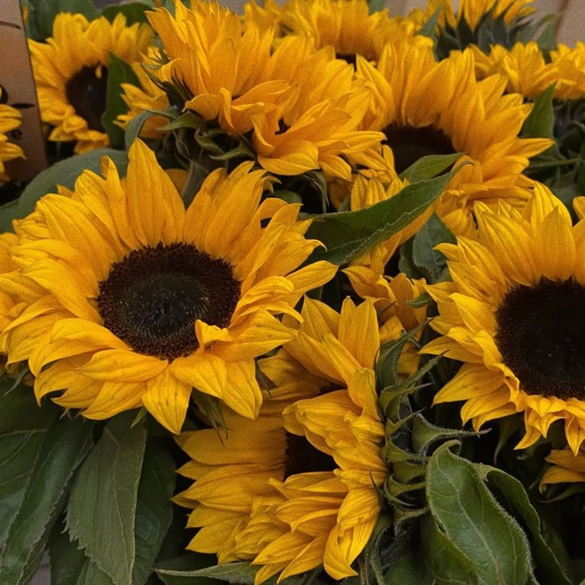

Floarea-Soarelui – Simbolul fericirii
Floarea-soarelui este cunoscută pentru frumusețea și energia sa pozitivă.
Îngrijirea florii-soarelui
- Expunere directă la soare.
- Udare regulată, dar fără exces.
- Fertilizare periodică pentru creștere sănătoasă.